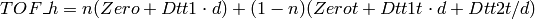

RefinePowderInstrumentParameters dialog.
Table of Contents
| Name | Direction | Type | Default | Description |
|---|---|---|---|---|
| InputPeakPositionWorkspace | Input | Workspace2D | Mandatory | Data workspace containing workspace positions in TOF agains dSpacing. |
| WorkspaceIndex | Input | number | 0 | Workspace Index of the peak positions in PeakPositionWorkspace. |
| OutputPeakPositionWorkspace | Output | Workspace2D | Output data workspace containing refined workspace positions in TOF agains dSpacing. | |
| InputInstrumentParameterWorkspace | Input | TableWorkspace | Mandatory | INput tableWorkspace containg instrument’s parameters. |
| OutputInstrumentParameterWorkspace | Output | TableWorkspace | Output tableworkspace containing instrument’s fitted parameters. | |
| RefinementAlgorithm | Input | string | MonteCarlo | Algorithm to refine the instrument parameters. |
| RandomWalkSteps | Input | number | 10000 | Number of Monte Carlo random walk steps. |
| MonteCarloRandomSeed | Input | number | 0 | Random seed for Monte Carlo simulation. |
| StandardError | Input | string | ConstantValue | Algorithm to calculate the standard error of peak positions. |
| Damping | Input | number | 1 | Damping factor for (1) minimizer ‘damping’. (2) Monte Calro. |
| AnnealingTemperature | Input | number | 1 | Starting aneealing temperature. |
| MonteCarloIterations | Input | number | 100 | Number of iterations in Monte Carlo random walk. |
| ChiSquare | Output | number |
This algorithm refines the instrumental geometry parameters for powder diffractomers. The parameters that can be refined are Dtt1, Zero, Dtt1t, Dtt2t, Zerot, Width and Tcross.
It serves as the second step to fit/refine instrumental parameters that will be introduced in Le Bail Fit. It uses the outcome from algorithm FitPowderDiffPeaks().
The function to fit is


The coefficients in this function are strongly correlated to each other.
Two refinement algorithms, DirectFit and MonteCarlo, are provided.
This is a simple one step fitting. If there is one parameter to fit, Levenberg Marquart minimizer is chosen. As its coefficients are strongly correlated to each other, Simplex minimizer is used if there are more than 1 parameter to fit.
This adopts the concept of Monte Carlo random walk in the parameter space. In each MC step, one parameter will be chosen, and a new value is proposed for it. A constraint fitting by Simplex minimizer is used to fit the coefficients in new configuration.
Simulated annealing will be tried as soon as it is implemented in Mantid.
In future, constaint will be considered.
This algorithm is designed to work with other algorithms to do Le Bail fit. The introduction can be found in the wiki page of LeBailFit v1.
Categories: Algorithms | Diffraction